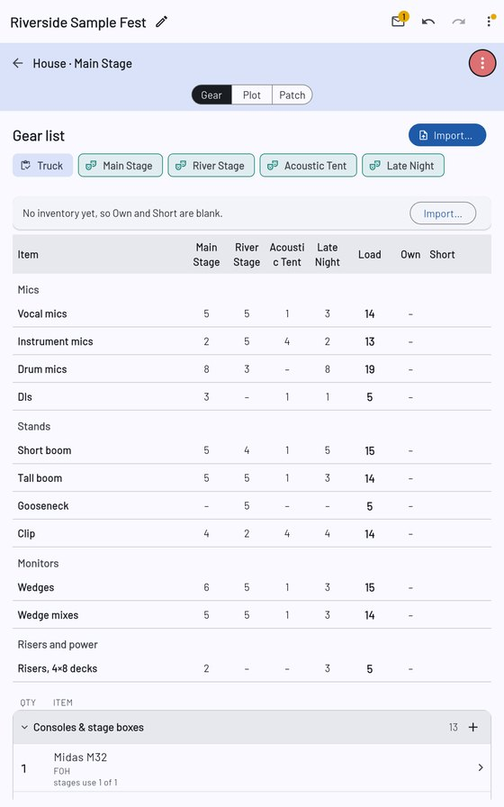

Gear list
Open it from the Show page: the House row's Gear window opens the House window on the Gear list, filling the page. Gear | Plot | Patch on its bar hops to the master plot and the master patch; the back arrow, or Android's Back, returns to the show. The list's ⋮ is on that bar.

One list per stage
The chips at the top: Truck (every stage added up — with more than one stage the page opens on it), then each stage's own list. Import… at the top reads a spreadsheet, a CSV or a pasted list for the show; a Stage column sorts the rows onto their stages ("Main" finds Main Stage), and a row it can't place is asked about — this stage, Truck, a new stage, or skip it.
The company's own inventory is switched off for now; a show's Own is its own list.
The table
One row per piece — how many and what — under folding headers: consoles and stage boxes, subsnakes, monitors, in-ears, wireless, mics, DIs, stands, backline, risers. Everything is the house's unless it's marked: a small Rental or Band tag sits after the name. Tap a row to change its count, model, stage (moves it), where it comes from, notes, or take it off the list; Undo puts it back. A header's + adds a piece to that group.
Load, Own and Short
On Truck each stage is added up: Load (what the acts need), Own (what the company has) and Short in red. On a stage: Biggest band + House up + Spares (set by hand with + / −) = Load. Tap a row to see the bands behind it, biggest first; tap a band for what it Brings, what it needs from you and Their page. To look at lists the bands whose read needs a look; self-contained bands are not counted. With no inventory, Own and Short stay blank until you Import… one.
A group's + adds a piece; the consoles' + also offers a main snake, split or stage box.
⋮ → Rental list (PDF) lists everything marked Rental.